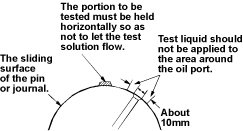

NOTE:
- Inspect the surface of the crankshaft journals and crankpins for excessive wear and damage.
- Inspect the oil seal fitting surfaces for excessive wear and damage.
- Inspect the oil ports for obstructions.
Run-out
- Set a dial indicator to the centre of the crankshaft journal.

- Gently turn the crankshaft in the normal direction of rotation. Read the dial indicator as you turn the crankshaft. If the measured value exceeds the specified limit, the crankshaft must be replaced.
Crankshaft run-out:
Standard (New):
0.05 mm or less (0.002 in.)
Service limit:
0.06 mm (0.002 in.)
Crankshaft Journal and Crankpin Uneven Wear
- Use the micrometer to measure the crankshaft journal and the crankpin uneven wear.
Crankshaft journal and crankpin uneven wear:
Standard (New):
0.05 mm (0.002 in.) or less
Service limit:
0.08 mm (0.003 in.)

Tufftriding Inspection
NOTE: To increase crankshaft strength, tufftriding (Nitriding Treatment) has been applied. Because of this, it is not possible to regrind the crankshaft surfaces.
- Use an organic cleaner to thoroughly clean the crankshaft. There must be no traces of oil on the surfaces to be inspected.
- Prepare a 5 - 10 % solution of ammonium cuprous chloride (dissolved in distilled water).
- Use a syringe to apply the solution to the surface to be inspected.
Hold the surface to be inspected perfectly horizontal to prevent the solution from running.
NOTE: Do not allow the solution to come in contact with the oil ports and their surrounding area.

- Wait for thirty to forty seconds. If there is no discoloration after thirty or forty seconds, the crankshaft is usable. If discoloration appears (the surface being tested will become the colour of copper), the crankshaft must be replaced.
- Steam clean the crankshaft surface immediately after completing the test.
NOTE: The ammonium cuprous chloride solution is highly corrosive. Because of this it is imperative that the surfaces being tested be cleaned immediately after completing the test.